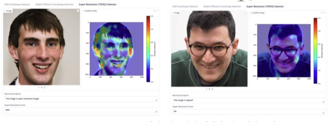

|
Giyun Choi I am actively looking for a full-time Ph.D. position! I am a researcher at RGA Robotics, a deep-tech company building AI-powered social robots. I received my M.S. in Image Engineering from Chung-Ang University, where I was advised by Prof. Jongwon Choi in the Visual Intelligence Lab. My research focuses on inclusive 3D human pose and mesh recovery and on human interaction in robotic environments — building perception that works for every body, and robots that understand the people around them. Before turning to research, I spent several years as a broadcast technology engineer in Seoul and Tokyo — an experience that keeps my work grounded in real-world video systems. Email / CV / Google Scholar / GitHub |

|
PublicationsInternational |

|
Semantic Flip: Synthetic OOD Generation for Robust Refusal in Embodied Question Answering and Spatial Localization
Dongbin Na, Chanwoo Kim, Giyun Choi, Dooyoung Hong Under review, 2026 — arXiv / project page / code |

|
AJAHR: Amputated Joint Aware 3D Human Mesh Recovery
Giyun Choi*, Hyunjin Cho*, Jongwon Choi (* equal contribution) International Conference on Computer Vision (ICCV), 2025 project page / arXiv / ICCV / supplement / bibtex |

|
Style Prompt Tuning for Bridging Visual Gaps in Autonomous Driving
Suyeon Cha, Giyun Choi, Minji Kwak, Jongwon Choi Engineering Applications of Artificial Intelligence (EAAI), vol. 161, 2025 paper / DOI / bibtex |
|
Domestic |
|
 |
Super-Resolution Detection Based on Deepfake Image Manipulation Techniques and Learnable Convolutional Kernels
Giyun Choi, Sungbin Yun, Jongwon Choi Journal of the IEIE (KCI), Oct 2025 paper / bibtex |

|
Expansion Study of an Automatic Animation-to-Webtoon Conversion System for Applying Various Animation Styles
Giyun Choi, Chaeyun Baek, Chaewon Hong, Takhoon Kim, Gyuhyun Kim, Jongwon Choi IEIE Summer Conference, Jun 2025 — Outstanding Student Paper Award paper / bibtex |
Experience |
|
|
RGA Robotics — Robot Vision Researcher | Feb 2026 – Present | ||||||
|
||||||||
|
|
Chung-Ang University Industry–Academic Cooperation Foundation — Research Assistant | Sep 2025 – Dec 2025 | ||||||
|
|
FOR-A JAPAN — Engineer, Technical Department | Jul 2020 – Jun 2022 | ||||||
|
|
UBINS — Staff, Media Services Team | Jul 2018 – Jun 2020 | ||||||
Education |
|
|
Chung-Ang University — M.S. in Image Engineering
GPA 4.32/4.50 · Advisor: Prof. Jongwon Choi |
Mar 2023 – Aug 2025 |
|
|
Korea National Open University (KNOU) — B.B.A. in Business Administration
GPA 4.10/4.50 |
Mar 2020 – Feb 2022 |
|
|
Dong-Ah Institute of Media and Arts — Associate Degree in Broadcast Technology
GPA 3.54/4.50 |
Mar 2013 – Feb 2018 |
Projects |
|
|
Provenance-based Detection of Multimodal Synthetic Content and Generator-Model Attribution (Reverse Detection)
Funded by IITP |
Mar 2025 – Nov 2025 |
|
|
Detection Methods for Tampering in Digital Image Files
Funded by the Supreme Prosecutors' Office |
Aug 2024 – Dec 2024 |
|
|
Optimization of CAE (Computer-Aided Engineering) Simulation Techniques
Funded by Hyundai Mobis |
Apr 2024 – Aug 2024 |
|
|
Development of a User-Friendly AI Platform and Reinforcement Learning Techniques for Automatic Animation-to-Webtoon Conversion
Funded by KOCCA |
Sep 2023 – Mar 2024 |
Patents & SoftwarePatents |
|
Apparatus and Method for Generating Three-Dimensional Human Mesh Data for Person with Amputated Body Parts
KR 10-2025-0184462 |
Nov 2025 |
|
System for Automatically Converting Animation into Webtoon Using Semantic Segmentation of Video and Audio Information
KR 10-2024-0040602 |
Mar 2024 |
|
Software Registrations |
|
FAKE Generator (Fake News Generator)
C-2025-050562 |
Nov 2025 |
|
User-Friendly AI Platform and Technologies for an Automatic Animation-to-Webtoon Conversion System (ANI-TOON Converting AI)
C-2024-050520 |
Nov 2024 |
Teaching Assistant |
|
|
Chung-Ang University Military AI Education Program — Teaching Assistant
Introduction to Artificial Intelligence |
Mar 2024 – Apr 2024 |
|
Template adapted from Jon Barron's website. |